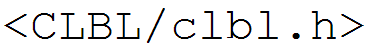
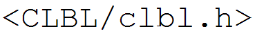

|  | 

|
|  |
|
This site is currently under construction. Many pages and sections are incomplete or missing.
TODO - write this section
Temporary documentation: To use CLBL, add CLBL/include to your include path and #include<CLBL/clbl.h>.
To build and run the test cases and examples, Windows users can install a recent version of VS2015 and run one of the top-level batch scripts in CLBL/scripts.
Others will need to refer to the cmake commands in the .travis.yml for now.
Clang 3.6 (and later) is currently the only compiler that supports all features used in CLBL.
bar represents some type with a CV-overloaded operator().
In C++, initializing an std::function with a callable object reference conversion preserves the object's CV-overload resolution. This is, of course, perfectly normal. Anything else would violate const-correctness.
Initializing an std::function with a callable object copy does not pass the CV-ness, and respective overload resolution behavior, of the original object along with the copy. Once again, this is perfectly normal behavior in C++. The ability to initialize a non-const object with a const object copy is pretty fundamental to the way things work in C++. For example, void my_func(const int i) is an ambiguous overload of void my_func(int i), because a const int is copyable to the argument of both overloads.
However, isn't this feature a bit disappointing when considering the behavior of CV-overloaded callables?
Making f in the above code const doesn't change things, either.
One might object, "Why would any sane programmer write logically divergent CV overloads, where the above scenario actually causes a problem?"
I don't really know the answer to that question. But we do have to deal with the fact that STL containers' begin() and end() member functions are const-overloaded - const_vector_instance.begin() returns a const_iterator, while mutable_vector_instance.begin() returns a mutable iterator. With that in mind, consider the following parable (or don't, if you don't like parables):
One day at work, you naively assumed that an std::function intialized with a const object copy returned a const_iterator when called, when it actually returned an iterator. Since you treated the return value like a const_iterator, everything worked just fine. The product shipped, no eyebrows were raised, and donuts were had the following morning. Months later, a new hire (we'll call him Jimmy) starts poking around the program's state to fix a latent bug. Jimmy delights in his discovery of a pristine trove of mutable iterators, minding their own business, blissfully unaware of their impending demise at the behest of Jimmy's imperative tendencies... Jimmy is why we have const in the first place (...compiler optimizations notwithstanding).
Instead of blindly forwarding to operator(), CLBL wrappers bake the original object's CV-ness into their type, so that even copies will resolve to the same CV overload.
Every initialization in the following snippet involves a copy of a bar object:
The CV-ness of a CLBL wrapper's underlying object is embedded in the wrapper's type - this is referred to as "deep CV" in CLBL. Deep CV cannot be rescinded without resorting to hacks.
The CV-ness of the wrapper's own this pointer is referred to as "shallow
CV", which stacks on top of deep CV.
Here we add shallow const to a reference:
Then we add shallow volatile:
Perhaps disappointingly, shallow CV is removed in copy initialization of CLBL wrappers:
This could have been avoided in CLBL by implementing custom copy constructors, but the runtime benefits of trivial copy construction outweigh those of making shallow CV copyable, in my opinion.
clbl::harden is CLBL's disambiguation tool. One of the things it can do is "bury" shallow CV into the type of a CLBL wrapper, becoming deep CV.
The implementation of clbl::harden does not induce "[Matryoshka][Doll] madness" with types, which in turn helps keep your compiler and debugger happy. A detailed example about the other uses of clbl::harden can be seen at Disambiguating operator().
In a similar fashion, clbl::fwrap can be used to lock in the CV-ness of a CLBL wrapper.
Special handling is performed when this happens to prevent Matryoshka madness - the argument CLBL wrapper's internal data is repackaged as CLBL wrapper, which is often a different type entirely. (A naive implemenation would treat CLBL wrappers as just another callable type.)
In summary:
Shallow mutable, deep const - the const overload is called:
Shallow volatile added to deep const copy - the const volatile overload is called:
Shallow volatile lost in copy, deep const remains - the const overload is called:
TODO